For three decades, I have worked across visual design, product, technology, and business — leading multidisciplinary teams, creating systems, and staying close to the craft.
My career did not move from design to technology. It expanded from designing information to designing the systems, interactions, and software through which people experience it.
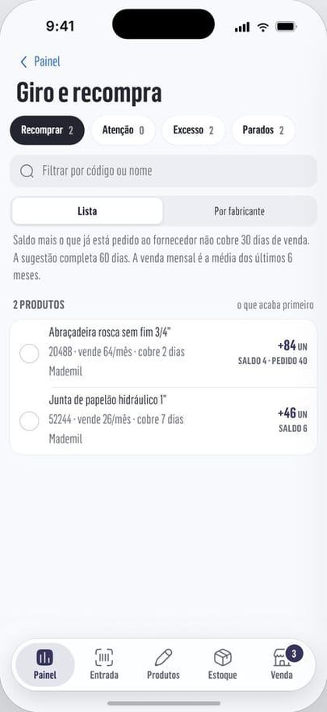
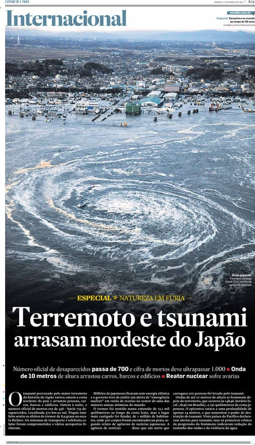
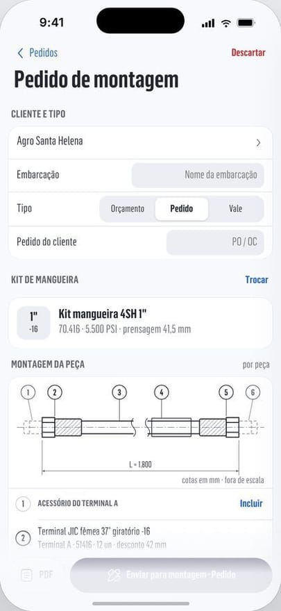
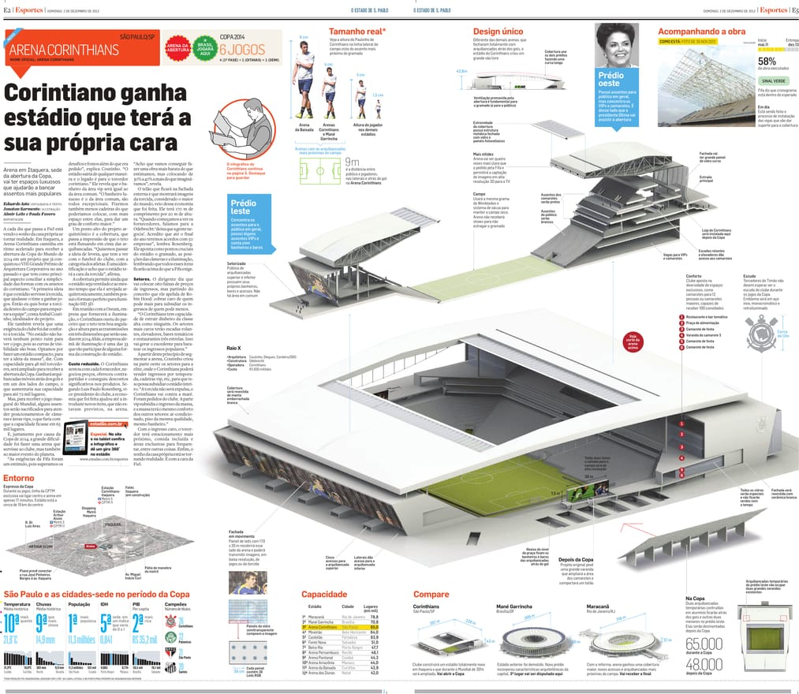
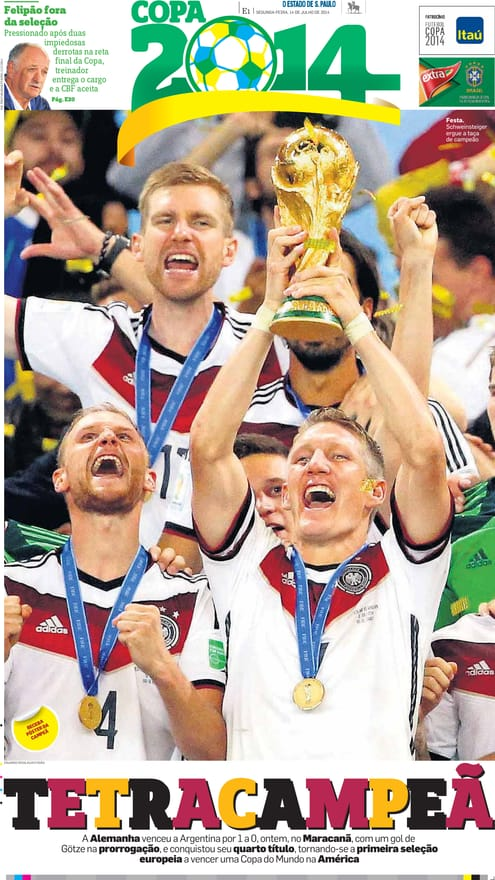
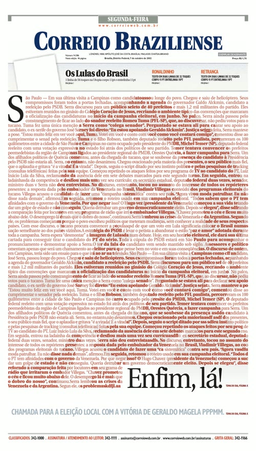
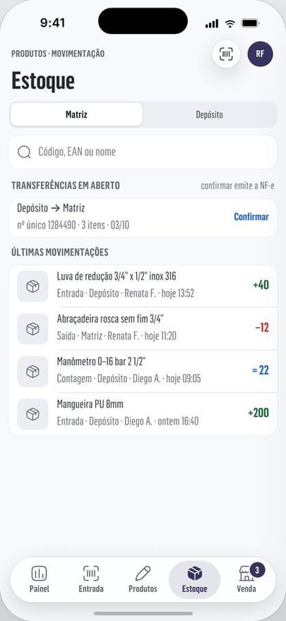
Craft is where it started
Visual journalism taught me to make unfamiliar, dense information understandable under real constraints and real deadlines. At Estadão, Diário de Notícias, Correio Braziliense, and through international consulting, I worked across typography, information architecture, data visualization, art direction, interaction, and storytelling — while leading teams responsible for products used by large audiences.
That work earned hundreds of national and international distinctions for the teams I led; the timeline on the home page plots only the ones I could confirm in public records.
Leadership means building the conditions for good work
I believe a design leader has two responsibilities at the same time: raise the quality bar and build an environment in which teams can reach it repeatedly.
Technology extended the design surface
Since 2010, I have increasingly worked with software as part of the design process. Today I build with JavaScript, Svelte, React, Python, SQL, APIs, ERP integrations, and AI-assisted workflows. It lets me prototype ideas and take product decisions all the way to production.
Today
At ATBL I lead the digital transformation and help run the company: people management, the reorganization of the sales department around a new team of salespeople, finance, and stock. The problems are very different from a newsroom, but the design challenge is familiar: complex rules, fragmented information, and users who should not have to understand the infrastructure underneath.
Selected career chapters
2025–Present
ATBL
Transformation and Innovation leadership, and company administration. Product strategy, digital operations, ERP integration, AI workflows, and hands-on product development.
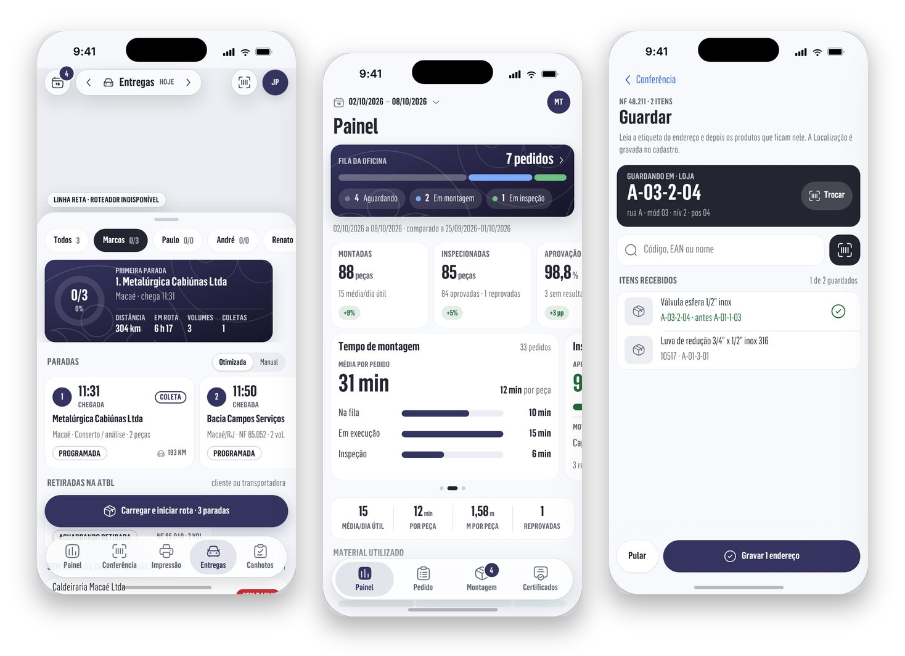
Delivery routes, the workshop panel, and stock put-away in the ATBL apps. 2023–2025
Independent
Product, technology, and business-process consulting; full-stack development and automation.
2005–2023
Estadão
Executive Art Editor. Led visual culture, redesign, information design, digital experimentation, and multidisciplinary creative teams.
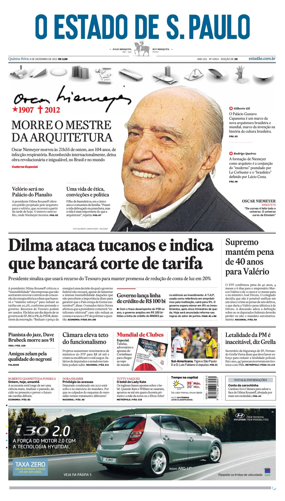
Front page of December 6, 2012, the day after Oscar Niemeyer died. 2003–2005
Diário de Notícias, Portugal
Consultant and Art Director. Led a redesign recognized by SND-e as Best Designed Newspaper in Iberia.
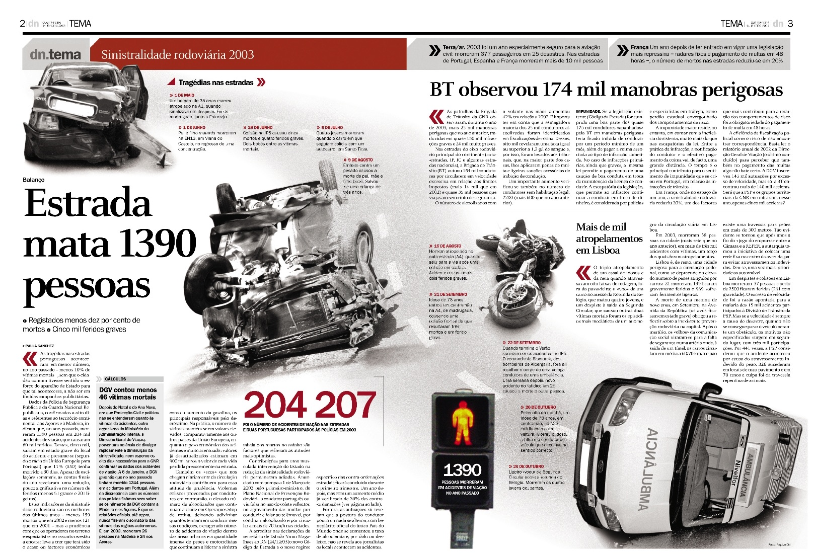
“Estrada mata 1390 pessoas”, a spread on road deaths in 2003, Diário de Notícias. 2000–2003
Correio Braziliense
Art editor, then head of the art department. Front pages built on one strong image and one headline. In 2002 the paper won 36 Society for News Design awards, more than in any other year of its history, and was the most awarded Latin American newspaper in the competition.
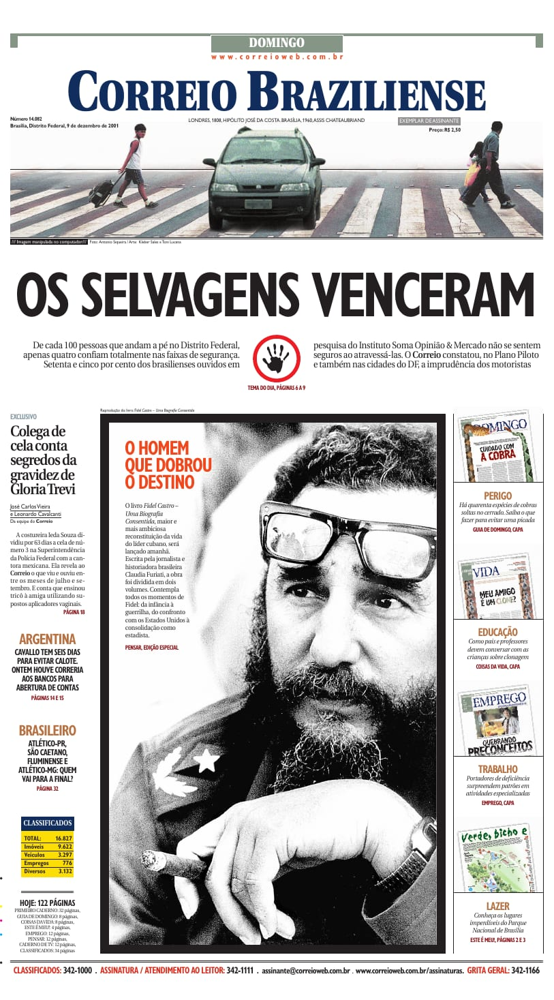
“Os selvagens venceram”, front page of December 9, 2001. 1997–2000
O Dia and O Globo
Designer, later deputy art editor. In 1997 the Society for News Design singled out one of my sports pages.
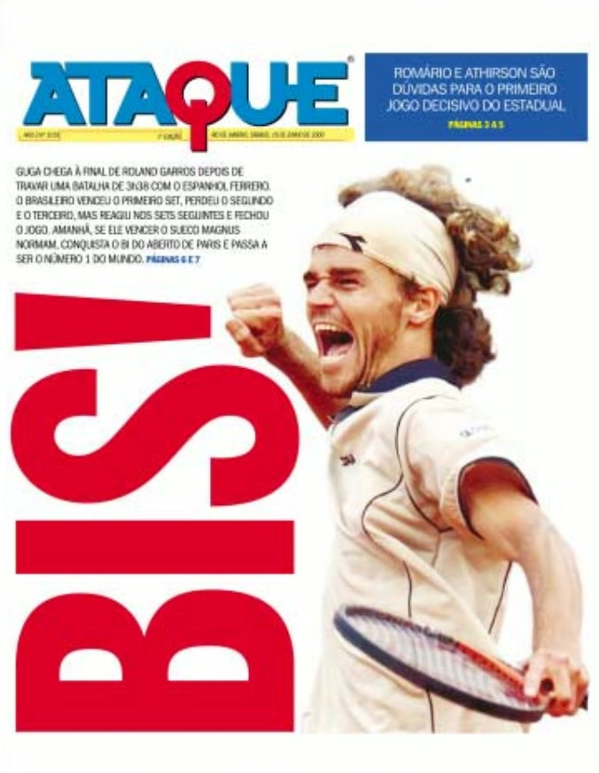
Cover of Ataque, the sports supplement of O Dia, June 2000. Throughout
Consulting & teaching
Redesigns and newsroom training abroad: Grupo Milenio in Mexico (2023), with eight workshops on infographics and visual storytelling; Gestión and La República in Peru; and, with the Barcelona studio Cases i Associats, the redesigns of Diário de Notícias and of Ataque, O Dia’s sports supplement. Malofiej judge and speaker (2009) and Society for News Design speaker (2003). Taught at ESPM, São Paulo (2017–2019).
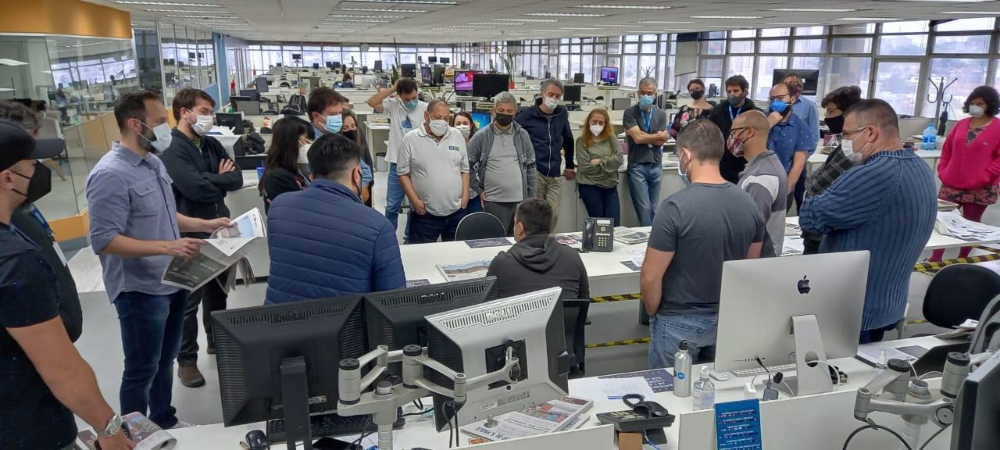
Going through printed pages with a newsroom, October 2022.
Recognition
For work I directed or led with my teams.
- Malofiej
- Jury member in 2009. Gold medal in 2011 for Tapuiassauro, among other distinctions.
- Society for News Design
- Awards of excellence and bronze medals for print and digital work, from 2005 to 2020. Earlier, in 2002, Correio Braziliense was the most awarded Latin American newspaper.
- Prêmio Esso
- Finalist in graphic design in 2010. Regional award for Favela Amazônia in 2015.
- Prêmio Vladimir Herzog
- Favela Amazônia and Rota 66 in 2015, Terra Bruta in 2016.
- Inter American Press Association
- Data journalism award in 2020.
- Information is Beautiful
- Best non-English language entry in 2019.
Written about this work
Research and articles by others that discuss projects I led.
- Joelma Melo, LinkedIn, 2021
- “Quando o jornal vira notícia”: a UX researcher on how the new print Estadão was tested with readers before launch.
- Dúnya Azevedo, ESDI/UERJ, 2007
- “A reinvenção de um jornal”: a master’s dissertation on the Correio Braziliense front pages of 1996 to 2002, including my years as art director.
- Lima, Andrade, Monat and Spinillo, CIDI, 2015
- “A adaptação de infográficos jornalísticos”: on the print and online versions of news graphics, with Tapuiassauro as an example.
- Cabral and Lucas, Intercom, 2025
- “Produção infográfica no jornalismo brasileiro em destaque no cenário internacional”: records Estadão’s Information is Beautiful award for the adoption simulation.
Design leader. Product builder. Still hands-on
I am interested in teams working on consequential products where complexity is unavoidable — but complexity in the user experience is not.